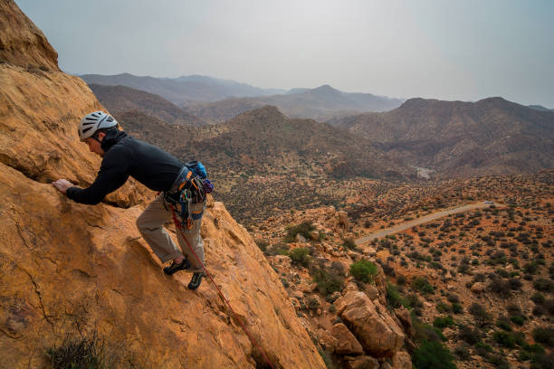

تجاربنا السياحية




مرشد محلي خبير في جنوب الأردن مع أكثر من 10 سنوات من الخبرة في السياحة المحلية.

مرشدة محلية متخصصة في السياحة الثقافية والتراثية في جنوب الأردن.

مرشد متخصص في المغامرات والأنشطة الخارجية في جبال الجنوب.
أكثر من 50,000 زائر سنوياً يستكشفون جنوب الأردن مع مرشدينا المحليين
4.8/5 تقييم متوسط من أكثر من 10,000 تقييم من زوارنا السعداء
25 مرشد محلي معتمد وخبير في جميع مناطق جنوب الأردن